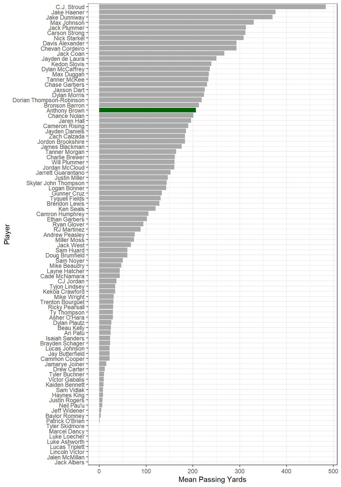
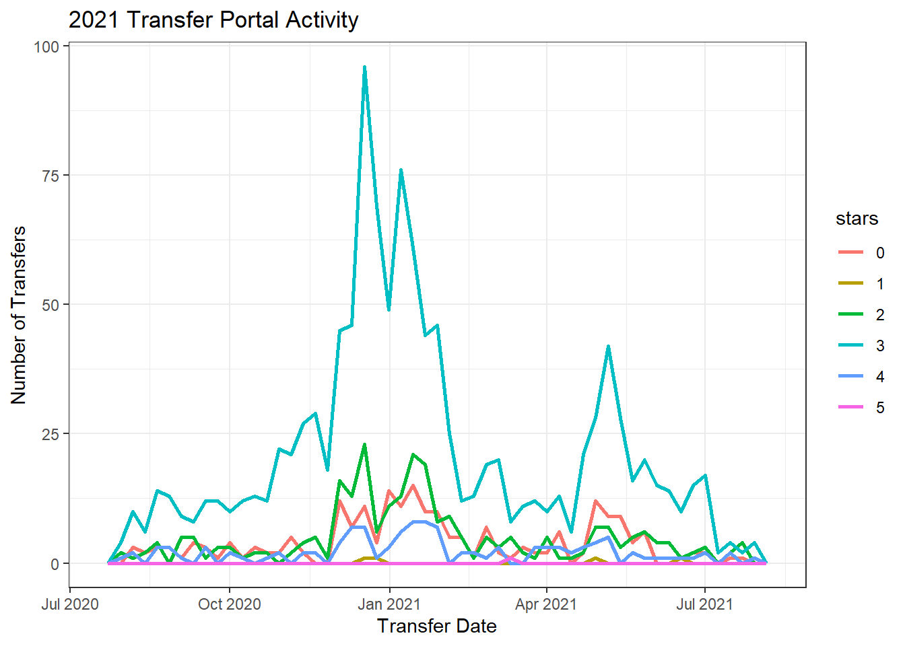
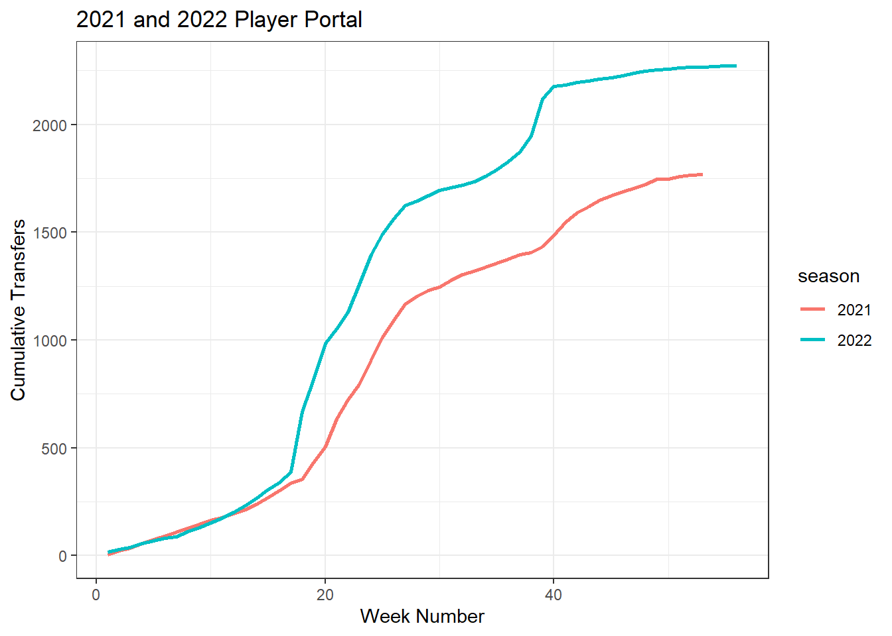
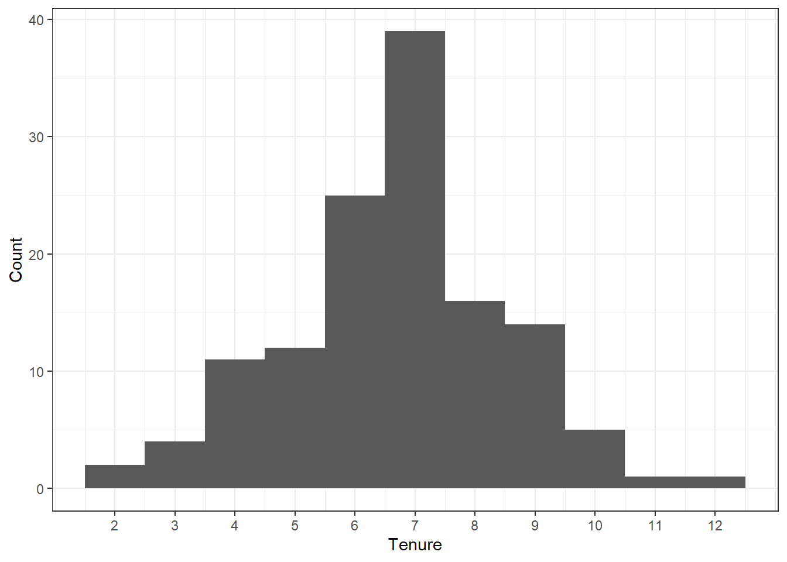
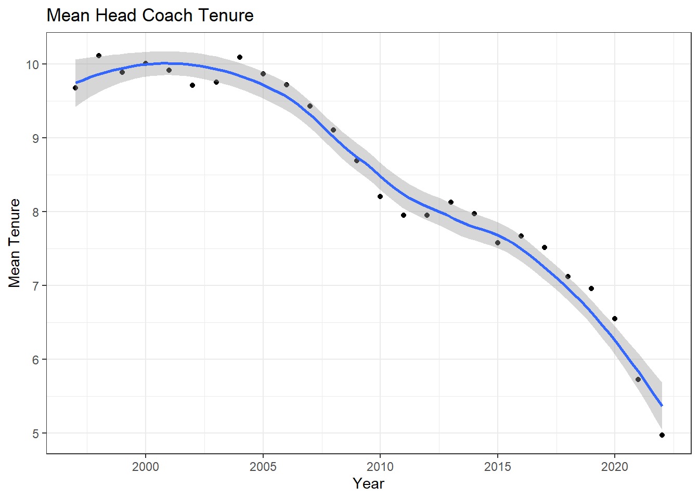
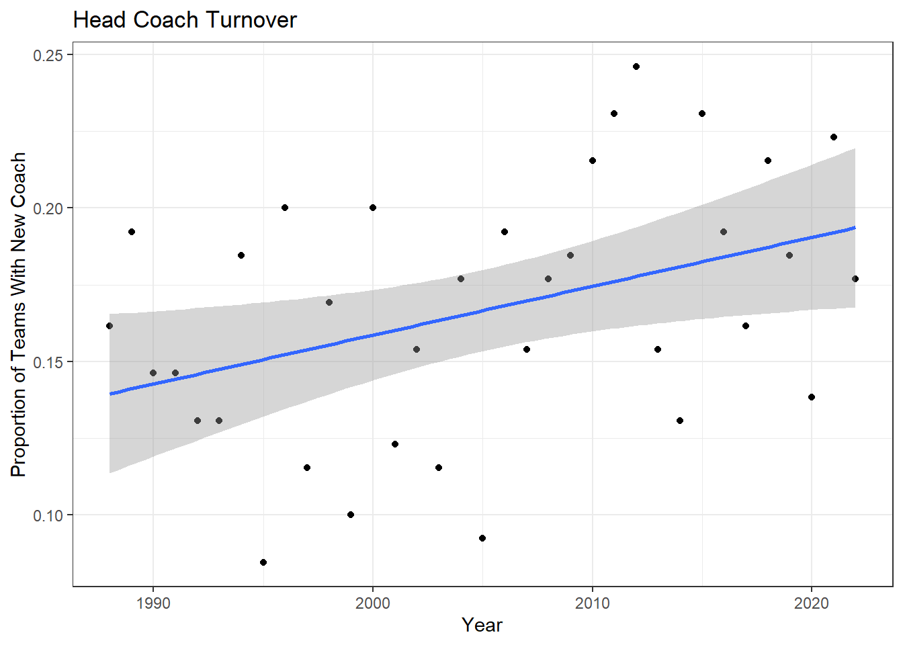
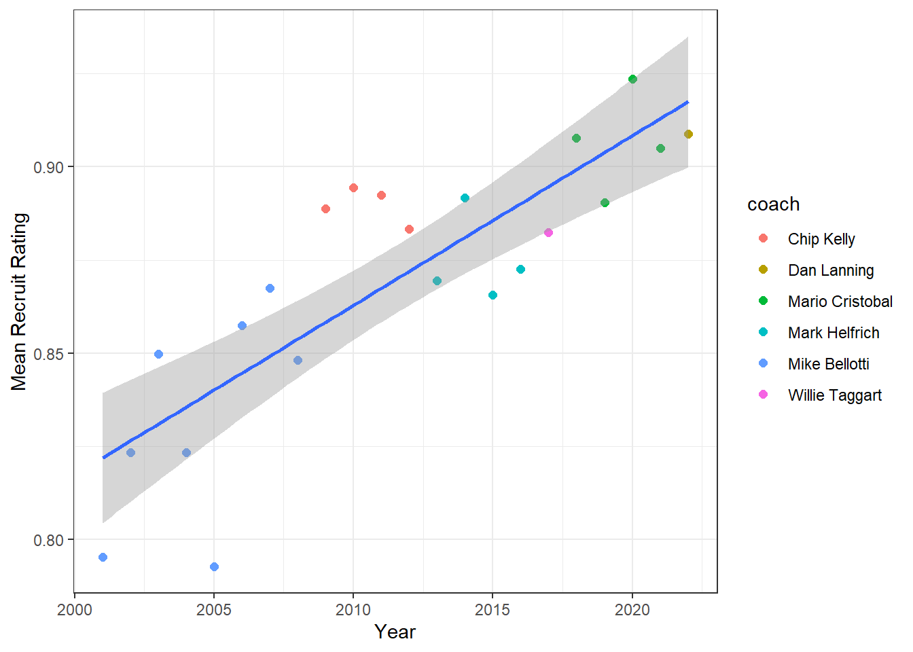
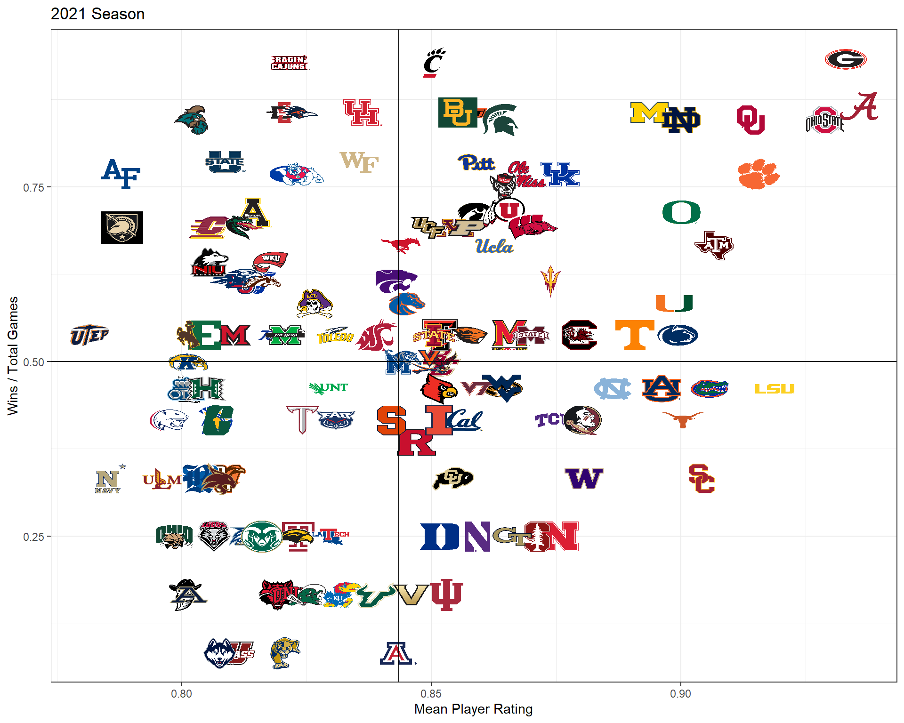

library(httr)
pac12 <- httr::GET(
url = "https://api.collegefootballdata.com/games/players?year=2021&seasonType=regular&conference=PAC",
httr::add_headers(
Authorization = paste("Bearer", Sys.getenv("CFDB_API_TOKEN"))
)
)Oregon Football 2021
R
ggplot2
college football
sports analytics
A look at Oregon football at the end of the 2021 season.
Why Football?
I’m not a huge football fan. I can’t even remember the last time I watched an NFL game. However, I do sort of follow college football. And being from Oregon, I root for whatever team from Oregon is playing. Sorry Beaver fans, but for quite a few years the Ducks have given me more to root for. The departure of Oregon’s head coach Mario Cristobal at the end of the 2021 season… Well, almost the end. He bolted before Oregon’s bowl game. Anyway, the whole season got me thinking about changes in college football over the years. It seemed like there were a lot of coaches that moved around. It also seemed like there were a lot more players that entered the transfer portal. Well, time to get some data and find some answers.
After some poking around, I found what looked like a great source for college football data at http://collegefootballdata.com. The offer a free API, too, which piqued my interest. I haven’t done anything with an API since grad school, so this was a good opportunity to re-learn forgotten skills. So. What to look into first?
Oregon’s Quarterback
Quite a few fans were not happy with Oregon’s starting quarterback, Anthony Brown. See this article, for example. The sentiment seemed to be that he was an ok quarterback, but just ok. Fans wanted see if the freshman and 4-star recruit Ty Thompson could do any better. Was this criticism of Brown justified? Let’s take a look.
I’m going to need some data on Anthony Brown’s performance, so let’s see what we can get via the API. If we go to their API docs page, the games/players/ data looks promising. To read the data into an R session, I’m going to use the GET() function from httr package. I want to grab all player data from the 2021 regular season for games in which a PAC-12 team played, so I need to build the URL accordingly. To do that, I add the base URL for the API, “https://api.collegefootballdata.com/”. Then the data set “games/players”. And then the filters “?year=2021&seasonType=regular&conference=PAC”. To use the API, I need to request an API token and include the word “Bearer” followed by my token. I do that with the add_headers argument. Notice I stored by API token in my .Renviron file and retrieved it with Sys.getenv() so that my token isn’t just printed in this post. So here we go.
Great! So What do I do with this thing? Well, I can check to see if I got an error or not from my request.
status_code(pac12)[1] 200A status code of 200 is good. 400 means there was an error of some kind. Maybe a typo in the URL, for example. Ok, but still. What is this pac12 thing?
class(pac12)[1] "response"It’s not a data frame or JSON or some kind of data structure, it’s a response object. So now I need to get it into a data structure. I can do that with the content() function from httr.
pac12_parsed <- content(pac12, "parsed")Great! So NOW what do I have to work with?
class(pac12_parsed)[1] "list"A list. Specifically, it’s JSON. Better, but still not what I want to work with. Turns out there are a number of packages and functions to work with JSON, and the first package I came across with the functions I’ll need is tidyr. According to the docs, the idea is to “rectangularize” the JSON into a tibble, so the first step is to create a tibble with a single column named data and then begin un-nesting the tibble to get at the underlying data.
library(tibble)
library(tidyr)
p12 <- tibble(data = pac12_parsed)
p12 <- p12 %>% unnest_auto(data)
head(p12)unnest_auto is handy when you don’t know the JSON structure. In this case, it applied unnest_wider() to create a tibble with now two columns. We can see that the new column teams is a nested list, so now we need to un-nest that column.
p12 <- p12 %>% unnest_auto(teams)
head(p12)Ok, so it applied unnest_longer(), but teams is still a nested list - only now there are 5 things in the lists instead of 2, so I guess we need to keep at it.
p12 <- p12 %>% unnest_auto(teams)
head(p12)Now we’re getting somewhere. The categories column is next.
p12 <- p12 %>% unnest_auto(categories)
head(p12)Gotta do it again.
p12 <- p12 %>% unnest_auto(categories)
head(p12)Ah, there’s a passing category. I’ll filter out all of the others and then un-nest types.
library(dplyr)
p12 <- p12 %>% filter(name == "passing") %>% unnest_auto(types)
head(p12)One more time.
p12 <- p12 %>% unnest_auto(types)
head(p12)Now dig into athletes. We’ll need to un-nest it twice again.
p12 <- p12 %>% unnest_auto(athletes) %>% unnest_auto(athletes)
head(p12)I don’t see any more nested columns, so our un-nesting is done. That seemed like a lot of work, but at least it looks like we have some good stats to work with. Since we had some duplicate column names, things got messy, so I’ll clean them up.
colnames(p12) <- c("game_id", "school", "conference", "homeAway", "points",
"category", "stat", "player_id", "name", "value")Let’s see. I think I’ll look at the YDS stat first. How about the mean passing years for each player? The value column is character, so I’ll convert that to numeric and then plot a bar chart with Anthony Brown in green. Remember I grabbed all games that PAC-12 teams played in, so the data will also include all of the PAC-12 non-conference game quarterbacks. I’ll also filter out the plays that were considered “team” QB plays.
library(ggplot2)
library(forcats)
qb_yards <- p12 %>% filter(name != " Team" & stat == "YDS") %>%
mutate(value = as.numeric(value)) %>%
group_by(stat, name) %>%
summarize(mean_stat = mean(value)) %>%
mutate(name = forcats::fct_reorder(name, mean_stat))
qb_yards %>%
ggplot() +
geom_col(aes(x=name, y=mean_stat),
fill = ifelse(qb_yards$name == "Anthony Brown", "darkgreen", "darkgray")) +
coord_flip() +
theme_bw() +
labs(x = "Player", y = "Mean Passing Yards")
Anthony averaged just over 200 passing years per game, and it looks like he’s around the middle of the pack. The QBs in the tail end of the chart had to have been 2nd and 3rd string players. I’m not sure how to identify starters vs. non-starters, so I’ll just assume that any player with less than a mean of 100 passing yards probably didn’t get enough playing time for a fair comparison. I’ll take that list of quarterbacks and get all of the QB stats and compare where Anthony is with the mean for each stat. The stats for completions and attempts is in a different format than the rest, so I’ll treat that stat separately.
qb_stats <-
p12 %>%
filter(name != " Team" &
!name %in% (qb_yards %>% filter(mean_stat < 100) %>% .$name) &
stat != "C/ATT") %>%
drop_na() %>%
mutate(value = as.numeric(value)) %>%
group_by(stat, name) %>%
summarize(mean_stat = mean(value))
qb_stats %>%
filter(name == "Anthony Brown") %>%
select(stat, mean_stat) %>%
rename("Anthony" = "mean_stat") %>%
bind_cols(
qb_stats %>%
group_by(stat) %>%
summarize(group_mean = mean(mean_stat)) %>%
select(group_mean)
)He’s consistently near the mean for each stat except maybe interceptions, which he’s had fewer of. Oregon fans seem to have missed the mark. Now for completions and attempts. First Anthony’s stats.
qb_comp <-
p12 %>% filter(name != " Team" &
!name %in% (qb_yards %>% filter(mean_stat < 100) %>% .$name) &
stat == "C/ATT") %>%
separate(value, c("comp", "att")) %>%
mutate(comp = as.numeric(comp),
att = as.numeric(att),
comp_pct = comp/att) %>%
group_by(name) %>%
summarize(completions = sum(comp),
attempts = sum(att),
mean_pct = mean(comp_pct))
qb_comp %>% filter(name == "Anthony Brown") Now the group mean.
qb_comp %>% summarize(group_mean_pct = mean(mean_pct)) %>% .$ group_mean_pct[1] 0.6082262He completed 63.7% of his passes, which is little higher than the group mean of 60.8%. Sorry, Oregon fans. I’m still not seeing it.
Player Transfer Portal
For this data, the API docs state that I need to request data one year at a time. There’s not a lot of historical data available via the API, so I’ll just this year and last year’s data. To get a feel for the data, first is a plot of last year’s portal activity broken out by how many stars each player was as a recruit.
for (yr in 2021:2022){
portal <- httr::GET(
url = paste0("https://api.collegefootballdata.com/player/portal?year=", yr),
httr::add_headers(
Authorization = paste("Bearer", Sys.getenv("CFDB_API_TOKEN"))
)
)
pp <- tibble(data = content(portal, "parsed"))
if (yr == 2021) {port <- pp %>% unnest_wider(data)}
else {port <- port %>% bind_rows(pp %>% unnest_wider(data))}
}
port <- port %>% mutate(transferDate = as.Date(transferDate),
stars = as.factor(replace_na(stars, 0)))
ggplot(port %>% filter(season == 2021)) +
geom_freqpoly(aes(x=transferDate, color=stars), binwidth=7, size = 1) +
theme_bw() +
labs(title = "2021 Transfer Portal Activity",
x = "Transfer Date",
y = "Number of Transfers")
Clearly a peak in activity at the end of the regular season, and there’s another one around May. We’re in the middle of the 2022 season, so I’ll do a cumulative tally of the number of transfers this year compared to last.
port %>%
mutate(season = as.factor(season)) %>%
group_by(season, week = lubridate::floor_date(transferDate, "week")) %>%
tally %>%
mutate(csum = cumsum(n)) %>%
ungroup() %>%
mutate(week_no = c(1:53, 1:56)) %>%
ggplot() +
geom_line(aes(x=week_no, y=csum, color=season), size = 1) +
labs(title = "2021 and 2022 Player Portal",
x = "Week Number",
y = "Cumulative Transfers") +
theme_bw()
It wasn’t just my imagination. There are a lot more players in the portal this year compared to last. So now I’ll look at coaching changes.
Head Coaches
My thought is to calculate coach tenure over time. In other words, for each school, how long has their head coach been there? For that, I think I’ll need to go back quite a few years to make sure I’m capturing coaches with a lot of tenure. To be safe, I want to go back 35 years to 1987. That data isn’t available via the API, but I found this Google Sheet that does. Here are the first few rows and columns to see how the data is structured.
library(googlesheets4)
library(janitor) # to clean column names
gs4_deauth() # the google sheet is public, so this will skip the authentication by token
coach <-
read_sheet(
"https://docs.google.com/spreadsheets/d/1UXbBC7T4NtN1JwJs6Gk5Qm_y_pI1JXnOFtVuE3Iu3OQ/edit#gid=0",
range = "A3:AK133")
coach[1:6, 1:6]Here’s a histogram of coach tenure to get a feel for the data.
# get the data into a long form and clean names
cl <- coach %>%
pivot_longer(cols = 2:37, names_to = "year", values_to = "coach") %>%
janitor::clean_names()
# convert back to wide data for tenure calculation
ct <- cl %>%
pivot_wider(names_from = "fbs_team", values_from = "coach") %>%
janitor::clean_names()
# number of distinct coach names for each school
ggplot() +
geom_histogram(aes(x=sapply(ct[, 2:131], n_distinct)),
bins=11, binwidth=1, boundary=-0.5) +
scale_x_continuous(breaks=2:12) +
theme_bw() +
labs(x="Tenure", y="Count")
Wow, there’s a couple of teams that have only had two head coaches in the last 35 years! Looks like the average tenure is around 7 years, and at least one unlucky team has had 12 coaches - that’s one new coach every three years. Now I’ll look at the trend over time.
library(purrr)
teams <- unique(cl$fbs_team)
tenure <-
1:nrow(ct) %>%
map_dbl(function(y)
mean(1:130 %>%
map_dbl(function(x)
nrow(cl %>%
filter(fbs_team == teams[x] &
coach == as.character(ct[y, x+1])))))
)
coach_tenure <-
tibble(year = 2022:1987, ave_tenure = tenure)
ggplot(coach_tenure %>% filter(year>=1997 & year<2023),
aes(x=year, y=ave_tenure)) +
geom_point() +
geom_smooth(method = 'loess', formula = y~x) +
theme_bw() +
labs(title = "Mean Head Coach Tenure",
x = "Year",
y = "Mean Tenure")
I just plotted data after 1997 because the first ten years of data will be influenced by having history that goes back ten years or less. This shows that average tenure was around 10 years up until about 2007. After that, coach tenure steadily dropped to be only 5 years as of 2022. That’s startling. The average coach tenure is only 5 years - half of what it used to be.
Another way of looking at this would be to think of it in terms of coach turnover per year. I’ll plot that and fit a linear regression line.
turn_over <- tibble(
year = 2022:1988,
pct_new = 2:36 %>% map_dbl(function(x) sum(coach %>% select(all_of(x)) != coach %>% select(all_of(x+1))) / 130)
)
# percent of new head coaches
ggplot(turn_over, aes(x=year, y=pct_new)) +
geom_point() +
geom_smooth(method = lm, formula = y~x) +
theme_bw() +
labs(title = "Head Coach Turnover",
x = "Year",
y = "Proportion of Teams With New Coach")
Well, not as striking as the previous plot, but there’s a definite upward trend in turnover. In 2022, more than 1 team in every 5 had a new head coach. Let’s check the model statistics.
summary(lm(pct_new ~ year, data = turn_over))
Call:
lm(formula = pct_new ~ year, data = turn_over)
Residuals:
Min 1Q Median 3Q Max
-0.074286 -0.024824 0.003445 0.029549 0.068414
Coefficients:
Estimate Std. Error t value Pr(>|t|)
(Intercept) -3.0260267 1.2905918 -2.345 0.0252 *
year 0.0015923 0.0006437 2.474 0.0187 *
---
Signif. codes: 0 '***' 0.001 '**' 0.01 '*' 0.05 '.' 0.1 ' ' 1
Residual standard error: 0.03846 on 33 degrees of freedom
Multiple R-squared: 0.1564, Adjusted R-squared: 0.1309
F-statistic: 6.12 on 1 and 33 DF, p-value: 0.01869Based on the p-value, the year term is statistically significant. We can interpret the coefficient to mean that each year, the proportion of teams with a new head coach increases by 0.0018. Not that dramatic, and the R-squared value means there’s a lot more going on in explaining the trend in coach turnover than just the passage of time.
Bayes. Should we go there? Nah, leave that for another post.
Oregon Recruiting
Mario Cristobal is regarded as a great recruiter, which got me thinking. Since I have coach data going back a ways, let’s see how Oregon recruiting has done over time. The API has information on recruiting, so I’ll grab everything they have on high school players who committed to Oregon. The data contains the star rating for each recruit, and it also has something called a player’s rating. I don’t know how that’s calculated, but it looks like it’s a number between 0 and 1 with larger number indicating a higher caliber recruit. For this purpose, I think a continuous number like rating is better than a categorical “star” rating. I’ll use that to plot the mean recruit rating over time and color the points according to the head coach.
rec <- httr::GET(
url = "https://api.collegefootballdata.com/recruiting/players?classification=HighSchool&team=Oregon",
httr::add_headers(
Authorization = paste("Bearer", Sys.getenv("CFDB_API_TOKEN"))
)
)
tibble(data = content(rec, "parsed")) %>%
unnest_wider(data) %>%
unnest_wider(hometownInfo) %>%
filter(year != 2001) %>%
mutate(latitude = as.numeric(latitude),
longitude = as.numeric(longitude),
year = year - 1) %>%
group_by(year) %>%
summarize(mean_rating = mean(rating, na.rm=TRUE)) %>%
left_join(
cl %>%
filter(fbs_team == "Oregon") %>%
mutate(year = as.integer(year)
), by = "year") %>%
ggplot() +
geom_point(aes(x=year, y=mean_rating, color=coach), size = 2) +
geom_smooth(aes(x=year, y=mean_rating), method = "lm", formula = y~x) +
labs(x = "Year", y = "Mean Recruit Rating") +
theme_bw()
If you’re a Ducks fan, that chart should make you happy. Mike Bellotti was a little shaky early on but got things off to a nice start. Chip Kelly was really consistent and above the overall trend. The fact that the Duck’s did so well nationally during his time given his recruit ratings were less than 0.9 suggests he was able to make the most of the available talent. Things dropped off a bit with Mark Helfrich, and then there’s Willie Taggart’s one hit wonder. Mario got things back on track, and Dan Lanning’s is certainly off to a great start.
Ok, so that’s Oregon. It would be interesting to see how Oregon does compared to the rest of the teams. But instead of just a comparison of all the teams’ ratings, the observation about Chip Kelly getting a lot of bang for the buck gave me an idea. How about a chart that, for a given year, has the recruit ratings on one axis and a team’s win record on the other? That ought to highlight those teams that over and under perform given the talent on their roster.
Bang For The Buck Chart
For this chart, I’ll take a different approach than I did for the last one. I’ll start by getting each team’s current roster, and then go back and get each player’s recruit rating. This will account for players who transferred at some point. I’ll also get all of the recruit sources, not just high school players. I’ll also limit the chart to the 130 FBS teams. I’ll then get each team’s 2021 win-loss record, and combine it all together for the chart. I noticed that the FBS data set also contains team logos, so for some bling, I’ll use team logos as markers. This takes a decent chunk of code, so here goes. One step at a time.
Team Rosters For 2021
roster <-
httr::GET(
url = paste0("https://api.collegefootballdata.com/roster?year=2021"),
httr::add_headers(
accept = "application/json",
Authorization = paste("Bearer", Sys.getenv("CFDB_API_TOKEN"))
)
)
rosters <-
tibble(data = content(roster, "parsed")) %>%
unnest_wider(data) %>%
drop_na(recruit_ids) %>%
unnest_longer(recruit_ids) %>%
select(first_name, last_name, team, recruit_ids)Player Recruit Ratings
year <- as.character(2017:2021)
recruit_source <- c("HighSchool", "JUCO", "PrepSchool")
for (yr in year){
for (rs in recruit_source){
recruiting <-
httr::GET(
url = paste0("https://api.collegefootballdata.com/recruiting/players?classification=",
rs, "&year=", yr),
httr::add_headers(
Authorization = paste("Bearer", Sys.getenv("CFDB_API_TOKEN"))
)
)
recruits <- tibble(data = content(recruiting, "parsed"))
if (nrow(recruits) == 0) next
if (yr == "2017" & rs =="HighSchool"){
recruits_all <-
recruits %>%
unnest_wider(data) %>%
select(id, committedTo, rating)}
else{
recruits_all <-
recruits_all %>%
bind_rows(recruits %>%
unnest_wider(data) %>%
select(id, committedTo, rating))
}
}
}
recruits_all <-
recruits_all %>% mutate(id = as.integer(id))Get List Of FBS Teams and Logos
fbs <-
httr::GET(
url = paste0("https://api.collegefootballdata.com/teams/fbs?year=2021"),
httr::add_headers(
accept = "application/json",
Authorization = paste("Bearer", Sys.getenv("CFDB_API_TOKEN"))
)
)
fbs_teams <-
tibble(data = content(fbs, "parsed")) %>%
unnest_wider(data) %>% unnest_longer(logos)
# combine datasets
team_recruit_rating <-
fbs_teams %>%
select(school, conference, logos) %>%
left_join(rosters, by = c("school" = "team")) %>%
left_join(recruits_all, by = c("recruit_ids" = "id")) %>%
drop_na() %>%
group_by(school, conference, logos) %>%
summarize(mean_rating = mean(rating)) %>%
arrange(desc(mean_rating))Team Win-Loss Records For 2021
records <- httr::GET(
url = "https://api.collegefootballdata.com/records?year=2021",
httr::add_headers(
accept = "application/json",
Authorization = paste("Bearer", Sys.getenv("CFDB_API_TOKEN"))
)
)
team_records <-
tibble(data = content(records, "parsed")) %>%
unnest_wider(data) %>%
unnest_wider(total) %>%
mutate(win_pct = wins / games)At Last, The Chart
library(ggimage)
plot_data <- team_recruit_rating %>%
left_join(team_records, by = c("school" = "team", "conference" = "conference"))
ggplot() +
geom_image(data = plot_data, aes(x=mean_rating, y=win_pct, image=logos)) +
geom_hline(yintercept = 0.5) +
geom_vline(xintercept = mean(plot_data$mean_rating)) +
ggtitle("2021 Season") +
xlab("Mean Player Rating") +
ylab("Wins / Total Games") +
theme_bw()
I like this chart.
Let’s start in the upper left. These teams, Georgia, Alabama, and Ohio State, had the highest player ratings and some of the best records.
Staying on the top of the chart and moving left, these teams had just as good of a record as the Georgia’s and Alabama’s, but they accomplished it with less talent. These teams, like Cincinatti and Louisiana, were like what I was guessing the Chip Kelly years at Oregon were like.
The teams in the lower right are those had a lot of talent but also lost a lot of games. USC, LSU, Florida, Texas, and Nebraska. I’m guessing those head coaches are on the hot seat.
We can see Oregon towards the upper right on that kind of middle diagonal where you could say these teams performed about as expected with the talent they had.
This chart gave me an idea for another chart, but I’ll save that for another post.